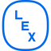
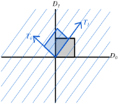

Research
Projects
-
Danish Foundation Models

A project spanning over multiple institutions and Danish universities dedicated to developing state-of-the art Danish language technology.
-
Lex LLM

We are working together with the Danish National Lexicon, to develop a chatbot that will help users effectively navigate the vast amounts of curated knowledge on their website.
-
European City\(^2\)
AarhusNLP is funded by the Horizon Europe project EuropeanCity2 - leading work package 5 - which explores agent-based models of democracy in order to provide viable alternative to the challenges that our European democracies are facing. AarhusNLP creates synthetic preference data and uses LLMs to improve simulation realism and complexity.
-
TEXT

We are part of the TEXT a Centre of Excellence funded by the Danish National Research Foundation that investigates text culture. AarhusNLP studies how variation in preferences and cultural context introduces hard problems for artificial intelligence.
Publication Highlights
-
 MMTEB - Massive Multilingual Text Embedding Benchmark
MMTEB - Massive Multilingual Text Embedding Benchmark Enevoldsen, K., Chung, I., Kerboua, I., Kardos, M. ...
A large-scale multilingual expansion of MTEB, driven mainly by highly-curated community contributions covering 250+ languages.
-
 The Scandinavian Embedding Benchmarks: Evaluating Multilingual and Monolingual Text Embedding for Scandinavian languages
The Scandinavian Embedding Benchmarks: Evaluating Multilingual and Monolingual Text Embedding for Scandinavian languages Enevoldsen, K., Kardos, M., Muennighoff, N. & Nielbo, K. L.
SEB is a comprehensive framework that enables text embedding evaluation for Scandinavian languages across 24 tasks, 10 subtasks, and 4 task categories.
-
 \(S^3\) - Semantic Signal Separation
Kardos, M., Kostkan, J., Vermillet, A.-Q., Nielbo, K., Enevoldsen, K. & Rocca, R.
A theory-driven topic modeling approach in neural embedding spaces, which conceptualizes topics as independent axes of semantic space.
-

topicwizard- a Modern, Model-agnostic Framework for Topic Model Visualization and InterpretationKardos, M., Enevoldsen, K. & Nielbo, K.
A framework for model-agnostic topic model interpretation, that provides intuitive and interactive tools that help users examine the complex semantic relations between documents, words and topics learned by topic models.
All Publications
-
Kardos, M., Kostkan, J., Vermillet, A.-Q., Nielbo, K., Enevoldsen, K., & Rocca, R. (2025). \(S^3\) -- semantic signal separation. Retrieved from https://arxiv.org/abs/2406.09556 ↩
-
Kardos, M., Enevoldsen, K. C., & Nielbo, K. L. (2025). Topicwizard -- a modern, model-agnostic framework for topic model visualization and interpretation. Retrieved from https://arxiv.org/abs/2505.13034 ↩
-
Enevoldsen, K., Chung, I., Kerboua, I., Kardos, M., Mathur, A., Stap, D., ... Muennighoff, N. (2025). MMTEB: Massive multilingual text embedding benchmark. The Thirteenth International Conference on Learning Representations. Retrieved from https://openreview.net/forum?id=zl3pfz4VCV ↩
-
Enevoldsen, K., Kardos, M., Muennighoff, N., & Nielbo, K. (2024). The scandinavian embedding benchmarks: Comprehensive assessment of multilingual and monolingual text embedding. The Thirty-Eight Conference on Neural Information Processing Systems Datasets and Benchmarks Track. Retrieved from https://openreview.net/forum?id=2WbuKAfOxP ↩
-
Kristensen-McLachlan, R. D., Canavan, M., Kardos, M., Jacobsen, M., & Aarøe, L. (2025). Are chatbots reliable text annotators? sometimes. PNAS Nexus, 4(4), pgaf069. https://doi.org/10.1093/pnasnexus/pgaf069 ↩
-
Kristensen-McLachlan, R. D., Hicke, R. M. M., Kardos, M., & Thunø, M. (2024). Context is key(NMF):: Modelling topical information dynamics in chinese diaspora media. In W. Haverals, M. Koolen, & L. Thompson (Eds.), Proceedings of the computational humanities research conference 2024 (pp. 829--847). Germany: CEUR-WS. ↩
-
Xiao, C., Chung, I., Kerboua, I., Stirling, J., Zhang, X., Kardos, M., ... Muennighoff, N. (2025). MIEB: Massive image embedding benchmark. Retrieved from https://arxiv.org/abs/2504.10471 ↩
-
Kostkan, J., Kardos, M., Mortensen, J. P. B., & Nielbo, K. L. (2023). OdyCy -- a general-purpose NLP pipeline for Ancient Greek. In S. Degaetano-Ortlieb, A. Kazantseva, N. Reiter, & S. Szpakowicz (Eds.), Proceedings of the 7th joint SIGHUM workshop on computational linguistics for cultural heritage, social sciences, humanities and literature (pp. 128--134). Dubrovnik, Croatia: Association for Computational Linguistics. https://doi.org/10.18653/v1/2023.latechclfl-1.14 ↩
-
Feldkamp, P., Lassche, A., Kostkan, J., Kardos, M., Enevoldsen, K., Baunvig, K., & Nielbo, K. (2024). Canonical status and literary influence: A comparative study of Danish novels from the modern breakthrough (1870--1900). In M. Hämäläinen, E. Öhman, S. Miyagawa, K. Alnajjar, & Y. Bizzoni (Eds.), Proceedings of the 4th international conference on natural language processing for digital humanities (pp. 140--155). Miami, USA: Association for Computational Linguistics. https://doi.org/10.18653/v1/2024.nlp4dh-1.14 ↩